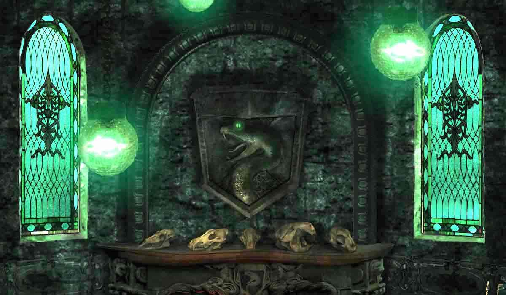
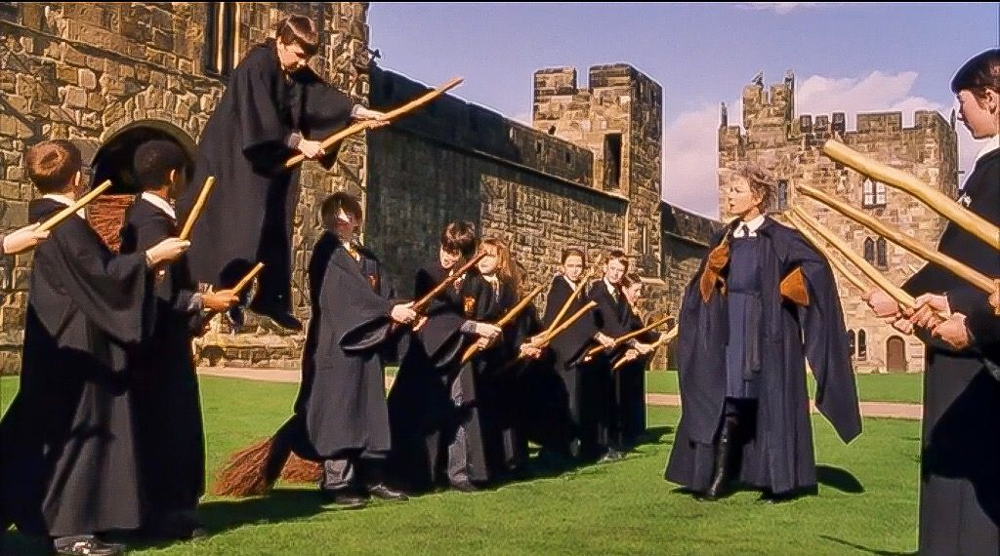
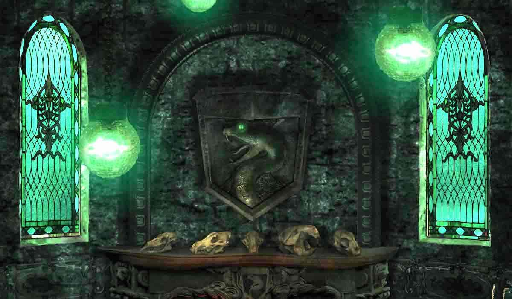
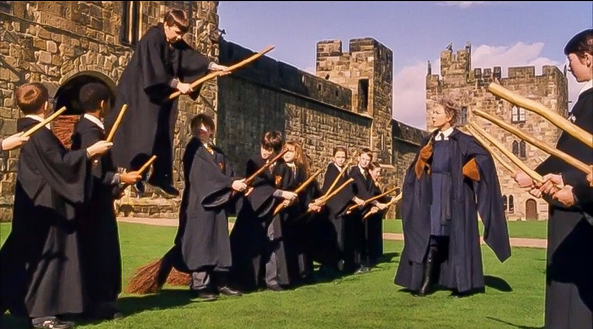
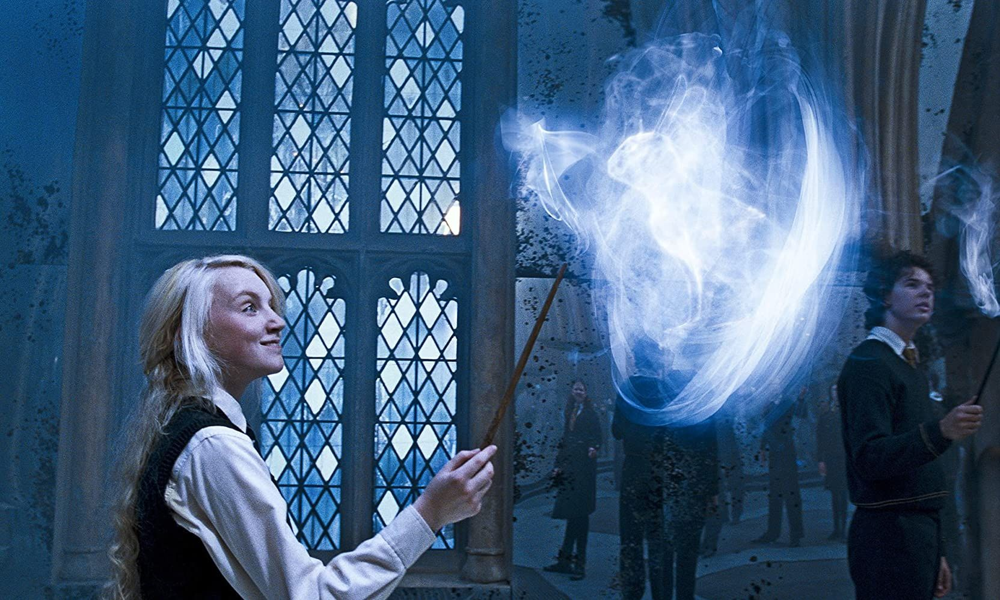
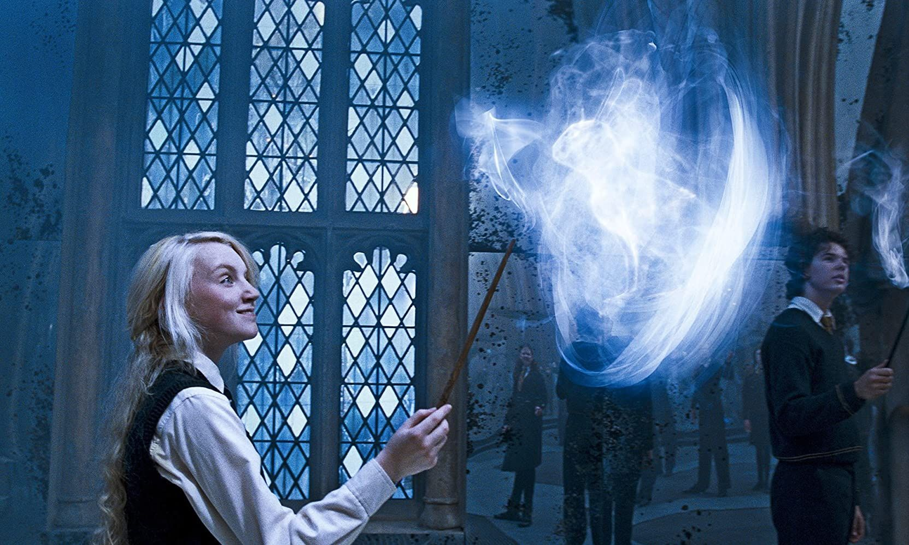
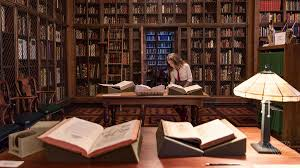
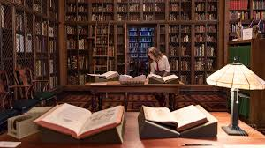

GRYFFINDOR
A Brief Description of Gryffindor
Gryffindor is one of the four Houses of Hogwarts School of Witchcraft and Wizardry and was founded by Godric Gryffindor.
Gryffindor instructed the Sorting Hat to choose students possessing characteristics he most valued, such as courage,
chivalry, and determination, to be sorted into his house. The emblematic animal is a lion, and its colours are scarlet and gold.
Sir Nicholas de Mimsy-Porpington, also known as "Nearly Headless Nick" is the House ghost.....
Read More >>>>>
HUFFLEPUFF
A Brief Description of Hufflepuff
Hufflepuff is one of the four Houses of Hogwarts School of Witchcraft and Wizardry. Its founder was the medieval witch Helga Hufflepuff.
Hufflepuff is the most inclusive among the four houses; valuing hard work, dedication, patience, loyalty, and fair play rather than a
particular aptitude in its members. The emblematic animal is a badger, and yellow and black are its colours. The Head of Hufflepuff
is Pomona Sprout and the Fat Friar is the House's patron ghost.....
Read More >>>>>

RAVENCLAW
A Brief Description of Ravenclaw
Ravenclaw is one of the four Houses of Hogwarts School of Witchcraft and Wizardry. Its founder was the medieval witch Rowena Ravenclaw.
Members of this house are characterised by their wit, learning, and wisdom. The emblematic animal symbol is an eagle, and blue and
bronze are its colours. The Head of Ravenclaw is Filius Flitwick and the house ghost is the Grey Lady, otherwise known as the daughter
of Rowena Ravenclaw, Helena Ravenclaw.....
Read More >>>>>
SLYTHERIN
A Brief Description of Slytherin
Slytherin is one of the four Houses at Hogwarts School of Witchcraft and Wizardry, founded by Salazar Slytherin. In establishing the house,
Salazar instructed the Sorting Hat to pick students who had a few particular characteristics he most valued. Those characteristics include
cunning, resourcefulness, leadership, and ambition. Many Slytherin students tend to clique together, often acquiring leaders, which further
exemplifies Slytherin's ambitious qualities.....
Read More >>>>>

 



 



 
